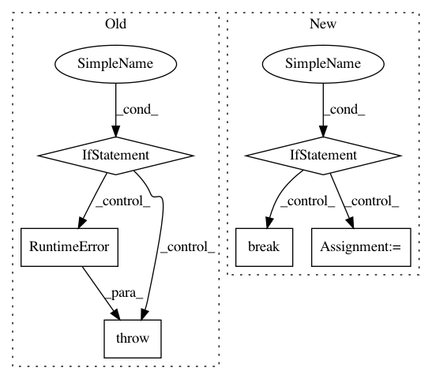

fa17621d9c8c5e5a0b7f9a89be489dd0c5ba0445,ilastik-shell/applets/pixelClassification/pixelClassificationSerializer.py,PixelClassificationSerializer,_serializePredictions,#PixelClassificationSerializer#Any#Any#Any#,138
Before Change
// Trigger the write
success = opWriter.WriteImage.value
if not success:
raise RuntimeError("Error while writing predictions to project file.")
startProgress = progress[0]
self._dirtyFlags[Section.Predictions] = False
After Change
with Tracer(traceLogger):
// If the predictions are missing, then maybe the user wants them stored (even if they aren"t dirty)
if self._dirtyFlags[Section.Predictions] or "Predictions" not in topGroup.keys():
self.deleteIfPresent(topGroup, "Predictions")
predictionDir = topGroup.create_group("Predictions")
if self.predictionStorageEnabled:
numImages = len(self.mainOperator.PredictionProbabilities)
if numImages > 0:
increment = (endProgress - startProgress) / float(numImages)
for imageIndex in range(numImages):
// Have we been cancelled?
if not self.predictionStorageEnabled:
break
datasetName = "predictions{:04d}".format(imageIndex)
progress = [startProgress]
// Use a big dataset writer to do this in chunks
opWriter = OpH5WriterBigDataset(self.mainOperator.graph)
opWriter.hdf5File.setValue( predictionDir )
opWriter.hdf5Path.setValue( datasetName )
opWriter.Image.connect( self.mainOperator.PredictionProbabilities[imageIndex] )
// Create the request
self._predictionStorageRequest = opWriter.WriteImage[...]
def handleProgress(percent):
// Stop sending progress if we were cancelled
if self.predictionStorageEnabled:
progress[0] = startProgress + percent * (increment / 100.0)
self.progressSignal.emit( progress[0] )
opWriter.progressSignal.subscribe( handleProgress )
finishedEvent = threading.Event()
def handleFinish(request):
finishedEvent.set()
def handleCancel(request):
self._predictionStorageRequest = None
finishedEvent.set()
// Trigger the write and wait for it to complete or cancel.
self._predictionStorageRequest.notify(handleFinish)
self._predictionStorageRequest.onCancel(handleCancel)
finishedEvent.wait()
// If we were cancelled, delete the predictions we just started
if not self.predictionStorageEnabled:
self.deleteIfPresent("Predictions/" + datasetName)
startProgress = progress[0]
self._dirtyFlags[Section.Predictions] = False
def cancel(self):
Currently, this only cancels prediction storage.
if self._predictionStorageRequest is not None:
self.predictionStorageEnabled = False
In pattern: SUPERPATTERN
Frequency: 4
Non-data size: 6
Instances
Project Name: ilastik/ilastik
Commit Name: fa17621d9c8c5e5a0b7f9a89be489dd0c5ba0445
Time: 2012-07-11
Author: bergs@janelia.hhmi.org
File Name: ilastik-shell/applets/pixelClassification/pixelClassificationSerializer.py
Class Name: PixelClassificationSerializer
Method Name: _serializePredictions
Project Name: streamlit/streamlit
Commit Name: d6b3aa9668d0211b8439fa8057b5295c1ab11f23
Time: 2018-05-21
Author: armando@playground.global
File Name: lib/streamlit/Proxy.py
Class Name: Proxy
Method Name: _client_ws_handler
Project Name: OpenNMT/OpenNMT-tf
Commit Name: 5cc1b3327714cbefb85a14540c20c90d963e341c
Time: 2020-06-08
Author: guillaumekln@users.noreply.github.com
File Name: opennmt/training.py
Class Name: Trainer
Method Name: _steps
Project Name: streamlit/streamlit
Commit Name: 4e1a728f3a7af1f1db1b8265f208cc34880bf17e
Time: 2018-05-18
Author: armando@playground.global
File Name: lib/streamlit/Proxy.py
Class Name: Proxy
Method Name: _client_ws_handler